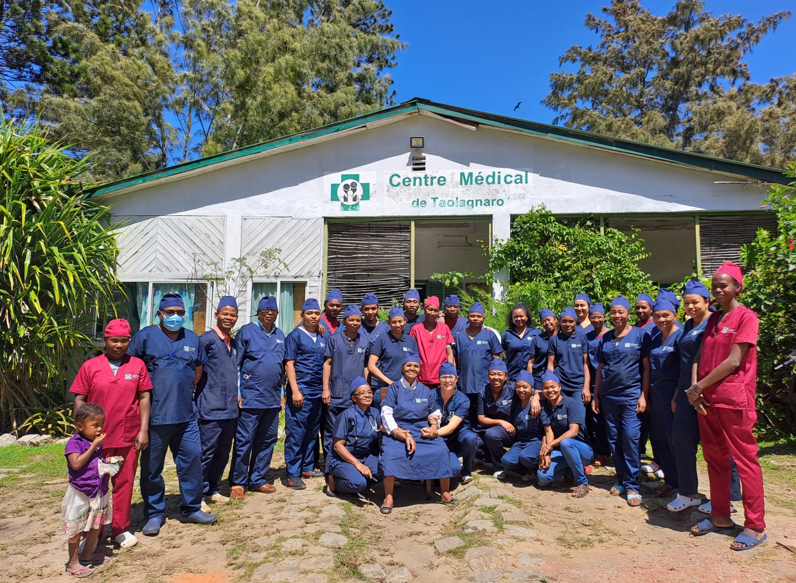

Jahresbericht 2024
Ein Jahr der Energie

2024 war ein Jahr der Energie – im doppelten Sinne. Mit der Installation einer leistungsstarken Solaranlage am Centre Medical de Taolagnaro haben wir einen Meilenstein erreicht, der die medizinische Versorgung nachhaltig verbessern wird.
Solaranlage für das Centre Medical
Die Stromversorgung in Fort-Dauphin ist unzuverlässig. Ausfälle von mehreren Stunden täglich sind keine Seltenheit – für ein Krankenhaus ein unhaltbarer Zustand. Kühlschränke für Medikamente, Sterilisationsgeräte, Beleuchtung im OP: Alles hängt von einer stabilen Stromversorgung ab.

Die neue Anlage mit 12 kWp Leistung und einem Batteriespeicher von 20 kWh ermöglicht nun einen autarken Betrieb auch bei längeren Stromausfällen. Die Installation erfolgte durch ein Team aus Fort-Dauphin, das wir eigens für diese Aufgabe geschult haben.
Fortschritte bei Tatirano
Unsere Partnerschaft mit Tatirano, der Organisation für Trinkwasserversorgung, wurde 2024 weiter ausgebaut. Zwei neue Wasserstationen an Grundschulen in der Region Anosy versorgen nun über 400 Kinder mit sauberem Trinkwasser.

Ausblick
Für 2025 planen wir die Erweiterung der Solaranlage auf die Hebammenstation sowie weitere Schulungen für das medizinische Personal. Dank Ihrer Unterstützung können wir diese Projekte angehen.